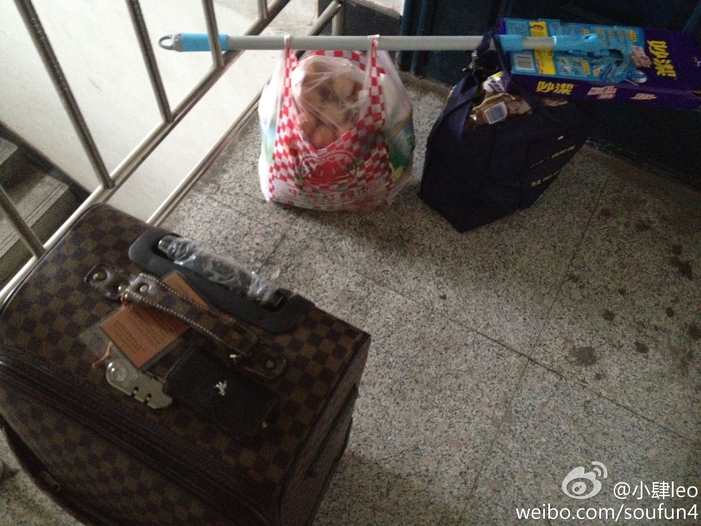

这就是多层没电梯的缺点！海富第五大道，多层电梯洋房，稀缺业态，欢迎品鉴。@小肆leo:你们知道一个男人是怎么将一个满满的旅行箱，两大袋子超市战利品，其中大量奶制品，饮品这几样东西一口气搬上楼，然后浑身都湿透的么？ 
@王33_JQ 哎妈呀~私生女吧这是？@王33_JQ 你快给大家解释一下这是怎么回事儿。。。这究竟是肿么一回事儿~~~~@Vermouth小苦 @王鑫Mcrazy @黑淇豆豆 @raiclebaby @狐誩狐語